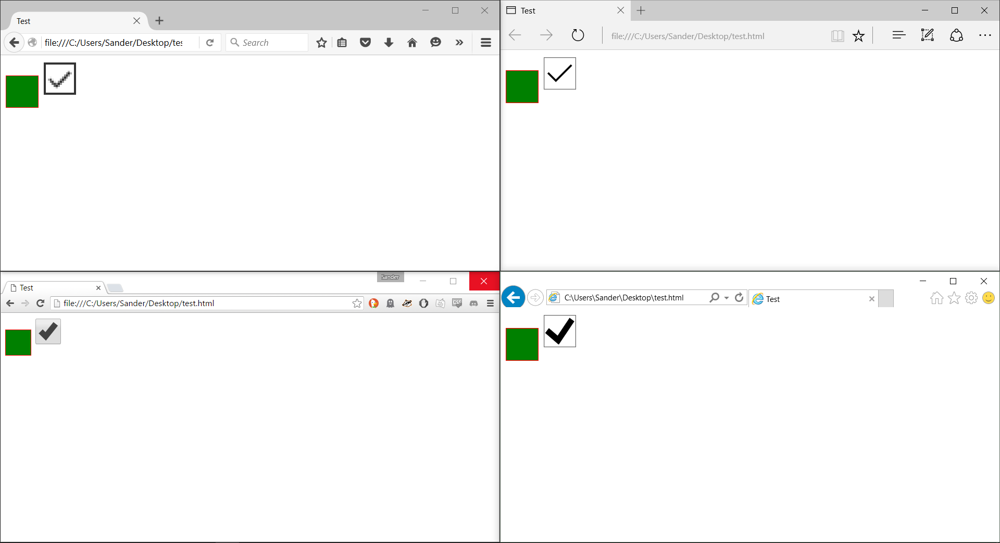
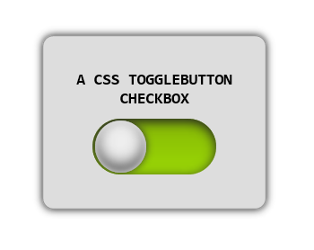
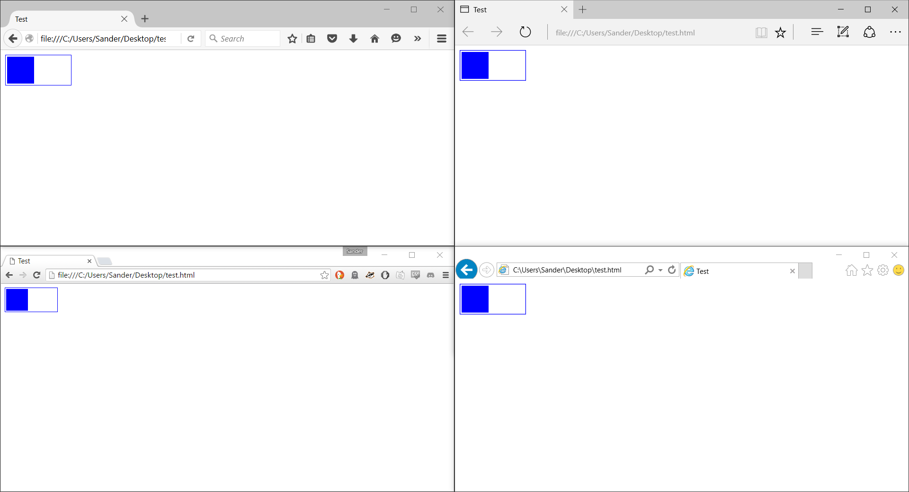
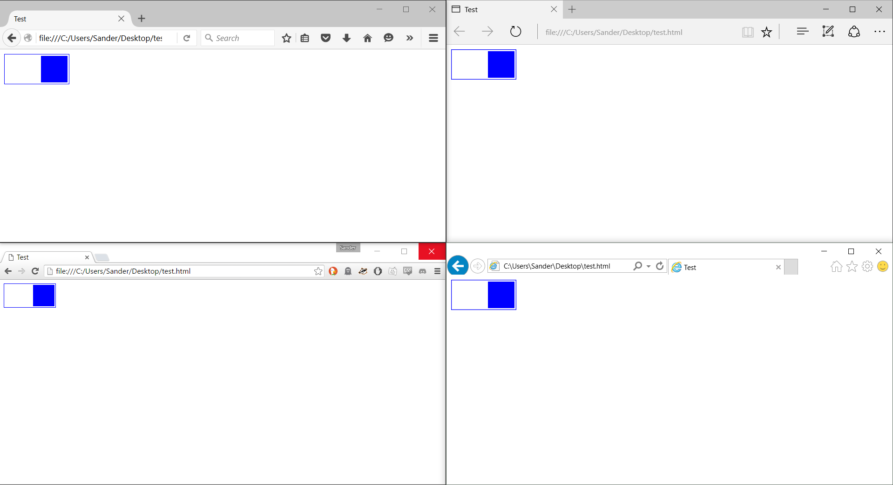

Creating a toggle switch with HTML and CSS
My current project involves an interface that is 100% touch driven (no keyboard and mouse) and I was asked to turn a regular old checkbox into a toggle switch.
Initially I assumed it would be very easy but as with many things browser related, it was not. Let’s take a look at some of the things browsers do to checkboxes using this quick example:
<html>
<head>
<title>Test</title>
<style>
input {
border: 1px solid red;
background-color: green;
width: 50px;
height: 50px;
}
</style>
</head>
<body>
<div>
<input type="text" />
<input type="checkbox" />
</div>
</body>
</html>

Sooooo, not a whole lot it seems… The text input will do as we ask but the checkbox only listens to the new width and height.
So a little more HTML is needed. We need a toggle switch such as this but a checkbox by itself (and :before and :after styling) won’t cut it.

What do we need to get that result? The actual checkbox needs to stay, because we need it to save the state of its fancy counterpart. To keep the ability to (un)check the box we need a label. Labels can be styled any way we want and they can be hooked up to form controls with the for attribute. The last part is a wrapper in the form of a div to keep everything together.
Putting all those elements to use leaves us with this markup:
<div class="checkbox">
<input id="checkMe" type="checkbox" />
<label for="checkMe"></label>
</div>
As noted above, we use the for attribute of the label to tie it to the checkbox. When a label is tied to a form control, clicking the label puts focus on the control. In the case of the checkbox, it toggles the checkbox state. By using this ability we can hide the checkbox itself but still control its state.
We have the HTML, now for the CSS. Hide the checkbox element inside our new faux-checkbox div.
.checkbox > input[type=checkbox] {
visibility: hidden;
}
We need to make room for the toggle to move left and right so the checkbox needs a width and a height.
.checkbox {
display: inline-block;
position: relative;
width: 110px;
height: 50px;
border: 1px solid blue;
}
Use inline-block to make the div behave like an inline element just like the checkbox (instead of the divs default block behavior). To make sure we got it right, apply a border so we can see the outline.
The next step is turning the label into the toggle switch that will show the state of the checkbox.
.checkbox > label {
position: absolute;
width: 46px;
height: 46px;
top: 2px;
left: 2px;
background-color: blue;
cursor: pointer;
}
Because we made the wrapper div positioned relative, we can use absolute positioning inside it to precisely set the position of the label. If you look at the browser and refresh with the newly created styles and markup, it should look like this:

Looking like a toggle switch already, except that it doesn’t work yet. Technically it does work, but the state is not yet reflected in the state of the toggle switch. Let’s fix that. Being able to react to the checkbox state requires a selector called :checked which lets you style elements that are in the checked state. In our case our unchecked state is the default state but if you need it you can combine :checked with the :not selector to find elements that are in an unchecked state. More info and compatibility stuff can be found here.
So :checked allows us to style our checked state, but we don’t want to style the checkbox, we want to style the label! It needs to move over to the right when the checked state is active.
This is where we use the direct sibling selector + (if you have more elements you want to style you should look at the ~ general sibling selector). We select the checkbox :checked state but we extend that by selecting the label on the same level in the DOM.
.checkbox > input[type=checkbox]:checked + label {
left: 62px;
}
Now we can change the style of label based on whether the invisible checkbox is checked or not. In our case, we move it over to the left to show the changed state of the checkbox. Refresh your browser and click the label that we positioned to the right of the wrapper div.

Here is a demo showing the end-result.
See the Pen Checkbox slide-toggle demo by Sander Harrewijnen (@Harrewarre) on CodePen.
With this basic setup you can now start dressing it up with all sorts of cool stuff like gradients, transitions, rounded corners and whatever else you like. Source to the screenshot of the green, shaded, rounded toggle can be found here if you want to tinker with that.
With a little bit of extra markup you can now turn a boring old checkbox into something nice. You can also turn this into a toggle button instead of a slider or a custom checkbox with your own images for the checked and unchecked state and have all the benefits of using regular checkbox that you can use in Javascript.